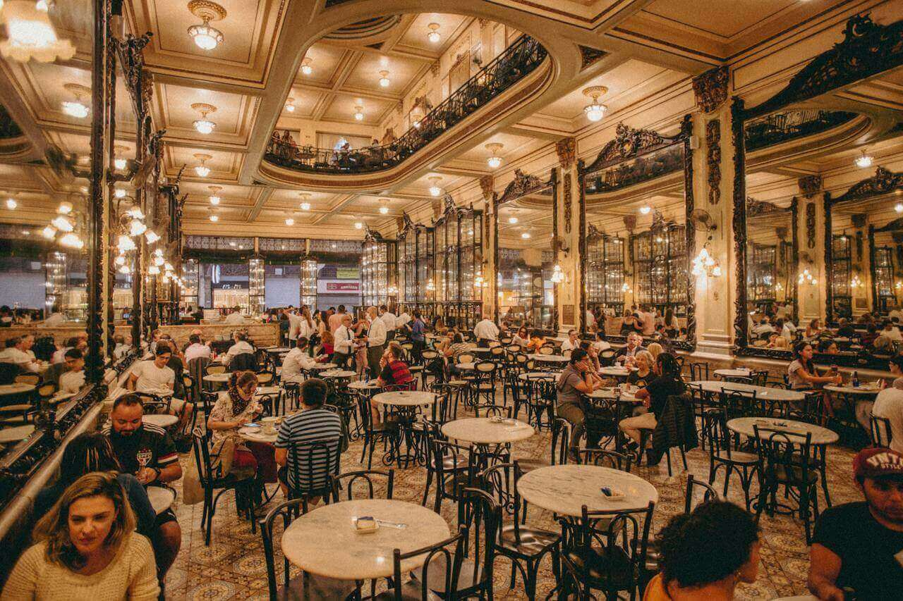

Weber Restaurant is a German restaurant where you can taste Bavaria in the heart of Munich's English Garden. Our Story began with a passion for bringing traditional Bavaria cuisine to the heart of Munich. Established in 1979, we have become a beloved culinary haven for locals and visitors alike. Our prime location offers a serene escape from the bustling city, allowing you to savor delectable dishes while surrounded by nature's tranquility. At the heart of our restaurants is our commitment to serving authentic Bavaria cuisine made from the finest locally - sourced ingredients. From classic Bavaria Pretzels to hearty Sausages, Sauerkraut, Roulade, and exquisite schnitzels. Our Menu is a culinary journey through Bavaria. Ready to savor the flavors of Bavaria in the heart of Munich? Reserve your table at Weber Restaurant and embark on a gastronomic adventure. Experience the magic of Weber restaurant, where every meal is a journey into the heart of Munich's rich gastronomic tapestry. Prost!

Meat with noodles, Sauerkraut, and sauce.

Meat with Potato Salad, Vegetable Salad, Lemon, Tomatoes, Lingonberries, and Chives.

Roasted Meat with Potato dumplings, Sauce and Rosemary.
"A delightful dining experience. We will be booking again."
"Effortless reservation process and a fantastic meal."
"We had a wonderful family dinner thanks to this website."